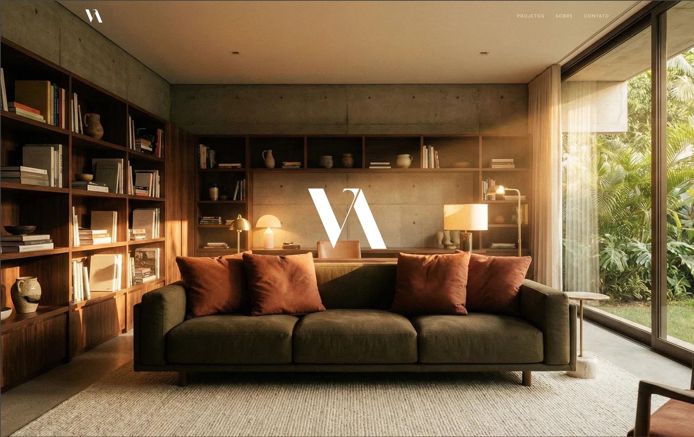

Estudo de caso
Vibe Arquitetura

O Desafio: Expandir para além das redes sociais
Por muitos anos, a arquiteta por trás da Vibe Arquitetura dependeu exclusivamente do Instagram para atrair clientes. Embora eficaz para inspiração visual, as redes sociais têm duas limitações críticas:
- Falta de Profundidade: Uma postagem ou story não consegue transmitir completamente o processo abrangente de projetar uma casa.
- Falta de Autoridade: Um perfil social não possui a permanência, a confiança e a estrutura de prova de um site dedicado.
- Desconexão com o Cliente: A arquiteta percebeu que os clientes em potencial tinham dificuldade em entender a diferença entre "gostar de uma foto" e "contratar o profissional".
O Objetivo: Criar uma sede digital permanente que construa confiança, eduque o cliente e defina claramente os serviços da arquiteta para além de apenas "espaços bonitos".
A Estratégia: Projetando uma "Planta Baixa Emocional"
Nossa abordagem não foi construir uma galeria de imagens padrão, mas sim construir uma experiência sensorial digital que espelhasse a filosofia de design real da arquiteta.
Linguagem Visual (Tons Terrosos Escuros)
Na maioria dos sites de arquitetura, a inclinação é usar brancos e cinzas absolutos. No entanto, com base no portfólio existente da arquiteta, que tende fortemente para madeiras quentes, tons terrosos e espaços naturais aconchegantes, decidimos usar uma base taupe/marrom escuro.
- Por quê? Essa escolha de cor comunica luxo, aconchego, estabilidade e atemporalidade. Ele sinaliza visualmente que esta arquiteta não faz designs frios e estéreis; ela constrói casas que parecem vividas e acolhedoras.
O UX "Processo em Primeiro Lugar"
Estruturamos o site para guiar o olhar do usuário na seguinte jornada: Emoção → Credibilidade → Educação → Ação:
- Hero (Emoção): Uma foto de alto impacto e atmosférica para capturar imediatamente o clima do projeto.
- Sobre (Credibilidade): A seção "Sobre a Vibe Arquitetura" conecta a marca aos desejos mais profundos do cliente (espaços aconchegantes, funcionais e requintados).
- Portfólio (Prova): Exibe os trabalhos passados. Agrupamos por "Residência" para tratar cada projeto como uma entidade distinta e de alto valor.
- Serviços (Educação): Esta é a seção funcional mais importante.
A Inovação Central: Resolvendo o problema do "O que você realmente faz?"
Muitos arquitetos enfrentam a mesma pergunta de clientes em potencial: "Você só desenha as plantas, ou cuida da construção inteira?" Resolvemos isso separando claramente os serviços da Vibe Arquitetura em três pilares distintos, tornando a oferta transparente:
- Consultoria (Estratégia): A fase de brainstorming/viabilidade (transformar conceitos em espaço funcional).
- Projeto (Execução): A criação do design arquitetônico, estético e funcional em si.
- Acompanhamento de Obras (Monitoramento): A supervisão in loco. Isso proporciona uma paz de espírito enorme para clientes que estão ansiosos sobre se o projeto será executado corretamente.
Impacto: Ao visualizar esses três pilares logo abaixo do portfólio, eliminamos a hesitação do cliente. Eles não precisam mais perguntar: "Você vai estar lá quando eles construírem?"
A Jornada do Usuário (Funil de Conversão)
- Descoberta: Eles chegam à página inicial. O marrom escuro cria uma sensação de "butique de luxo" em 1 segundo.
- Validação: Eles rolam para baixo até as seções "Residência". Ver as fotos arquitetônicas de alta qualidade fornece a prova de capacidade.
- Conforto: Eles leem a seção "Serviços". Percebem que podem contratar a arquiteta apenas para o design, ou para o gerenciamento completo do projeto.
- Decisão: Eles chegam às seções finais. Os CTAs (Call to Actions) "Faça Comigo" e "Compre Agora seu Projeto" são enquadrados como um convite para uma parceria colaborativa, em vez de uma transação fria.
Resultados e Impacto no Negócio
- Estabelecimento de Autoridade: A arquiteta agora pode direcionar seguidores do Instagram para o site, que atua como um "QG" legítimo em vez de um feed social.
- Transparência: A clara distinção entre "Consultoria", "Projeto" e "Acompanhamento" reduziu o número de chamadas preliminares confusas, alinhando as expectativas logo de início.
- Alinhamento de Marca: A estética marrom-escura garante que a marca digital corresponda ao verdadeiro "Vibe" das suas construções físicas.
Conclusão
Este projeto para a Vibe Arquitetura demonstra que um site de arquitetura nunca deve ser apenas um portfólio genérico. Quando projetado corretamente, ele atua como um showroom virtual que converte um navegador em cliente, comunicando claramente processo, valor e conexão emocional. Ele posiciona a arquiteta não apenas como uma desenhista, mas como uma parceira na criação de um lar.